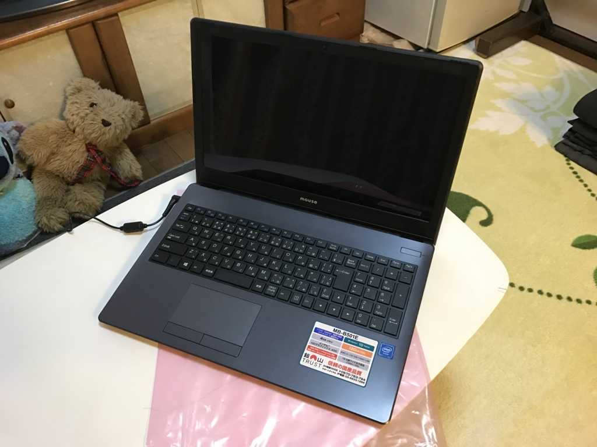
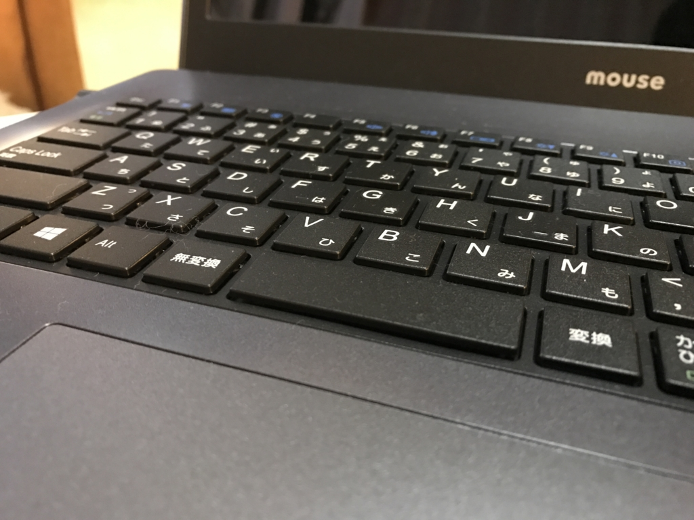

実家のために mouse のノートパソコンを買った
公開日：

実家の VAIO Fit 15 が起動不能になったのだそうで、「あまってるパソコンちょうだい」と LINE で言われたんだけど、あまってるパソコンなんてねーよ（#^ω^）
お前らにはこれがお似合いだ！

mouse ノートパソコン MB-B501E/Windows 10/Celeron N3160/15.6インチ/4GBメモリ/120GB SSD
- 出版社/メーカー: マウスコンピューター
- 発売日: 2016/06/20
- メディア: Personal Computers
- この商品を含むブログを見る
エントリーモデル（Office なし）で購入時 38,000 円ぐらいだったが、CPU が Celeron（N3160 4コア/1.6GHz）なのはともかく、メモリを 4GB、SSDを 120 GB を積んでおり、文化的最低限度の生活がかろうじて保たれている（？）。
動きはモサモサしているし（起動直後だと裏でアップデートとウイルススキャンが走っているせいでもある）、高精細なスマホのディスプレイに慣れた目でみると、モニターはツブツブ感があって発色が悪い（胃腸風邪で死んでた日の俺の顔色のようだ）。でも、どうせ月に一、二度ぐらいしか使わないのだから、これで十分だろう。

ただ、なんかキーボードがウネウネしているのは気になった。全体がフラットではなく、中央部分で少し盛り上がっている。手近にあった本で圧力をかけてみるとマシになった気もするが、全体的になんか取り付けが悪いな。とにかくこれで長い文章を打つ気にはなれない。
ちょっとディスったけど、「パソコンがないのは困るが、高いカネをだしてまで買いたくない」という我が実家にはピッタリな機種だと思った。我が財布へのダメージも最低限で済んだ（あれ？ なんで俺がお金出してるの！？）。たいして使わないうちに壊れる VAIO Fit 15 みたいなのを買うぐらいなら、3年で死ぬことを前提に安くてそこそこの機種を買う方が精神的にもよろしいだろう。Windows 10 Insider Preview をどうしても実機で試したい！ みたいな用途であれば、自分で購入してもよいぐらいだ（今のところ間に合ってるけど）。
最後に「Excel はないと困る」という母のために（だったら Office 付き買うじゃん！ 先に言えよ）「Office 365 Solo」を買ってインストール（これはさすがにおカネを出させた）。いまだにガラケーを使ってる母のために、PC で LINE を見られるようにした。また、「Office 365 Solo」のおかげで OneDrive のストレージが 1TB になったので、母が使っている iPad の写真を OneDrive と同期できるようにセットアップして、今回の帰省メンテナンスは終了。これで iPad の写真を失くさずに済むよ！
たいへんよく頑張りました。
追記
マウスコンピューター安いけど壊れやすいってホントなのかなーって調べてたら、”マウスは保障規定に「24時間以上連続して動かして壊れた場合は保障規定外」って書かれてる”ってあったので「またまたぁｗ」って見に行ったらほんとに書いてあった…うそだろ…
— 成瀬ちさと❄️土曜東a19b (@naruti06) 2017年1月3日
ほんま？ まぁ、大丈夫やろ（震え声